Prendre ses mesures
Le formulaire est prérempli à partir du tableau des tailles ci-dessous : les mesures principales y figurent, les autres en sont déduites.
| Taille | Tour de poitrine | Tour de taille | Longueur devant taille | Épaule-poignet |
|---|---|---|---|---|
| 44 | 88 | 76 | 44,5 | 62 |
| 46 | 92 | 80 | 45 | 62 |
| 48 | 96 | 84 | 45,5 | 62,5 |
| 50 | 100 | 88 | 46 | 63 |
| 52 | 104 | 92 | 46,5 | 63,5 |
| 54 | 108 | 98 | 47 | 64 |
| 56 | 112 | 104 | 47,5 | 64 |
| 58 | 116 | 110 | 48 | 64,5 |
| 60 | 120 | 116 | 48,5 | 65 |
| 62 | 124 | 122 | 49 | 65,5 |
Stature moyenne. Pour les statures petite et grande, seules les longueurs changent. Les numéros de taille sont les numéros français ; les mesures suivent la grille de la norme européenne des tailles de vêtements.
Ces tailles standard décrivent une silhouette moyenne, et peu de personnes y correspondent exactement. Vous pouvez donc corriger chacune des mesures : plus vous en corrigez, plus la veste sera sur mesure.
Il vous faut un mètre ruban, si possible l’aide d’une autre personne, et environ 10 minutes. Les mesures marquées « à vérifier » sont les plus importantes.
Pour les hommes
Onze mesures suffisent. Prenez-les sur vous ou sur la personne concernée, en sous-vêtements ou avec des vêtements très fins, le mètre ruban à plat contre le corps, sans serrer.
À vérifier en priorité : tour de poitrine, tour de taille, longueur devant taille, épaule-poignet.
Comment prendre vos mesures
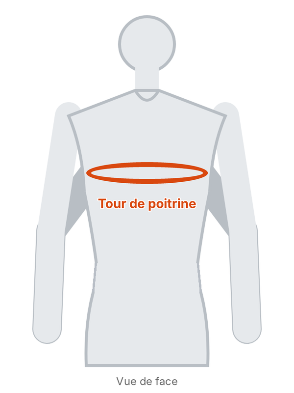
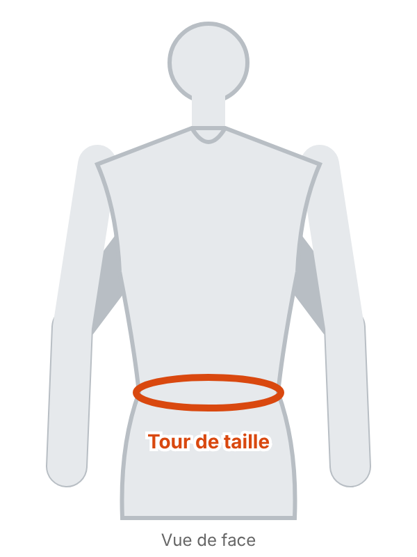
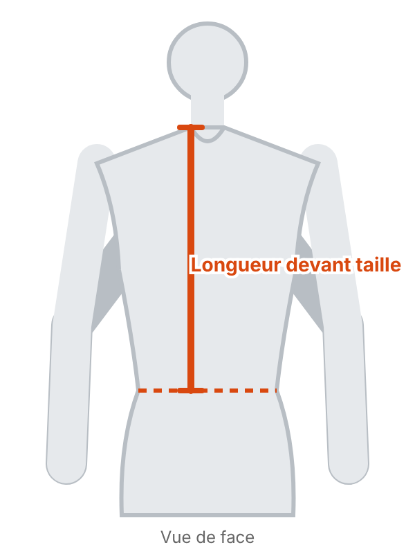
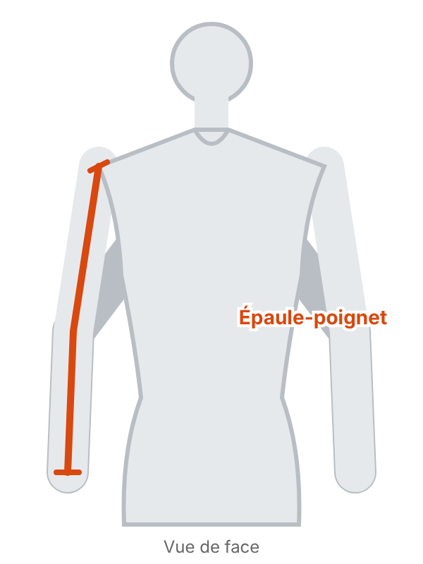
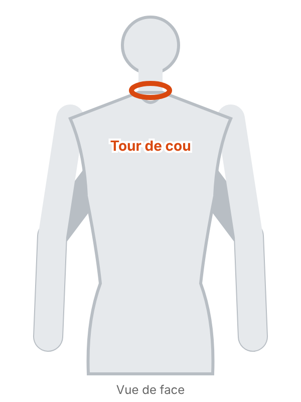
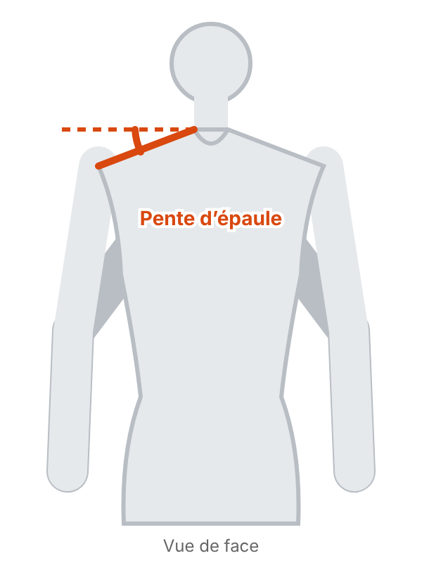
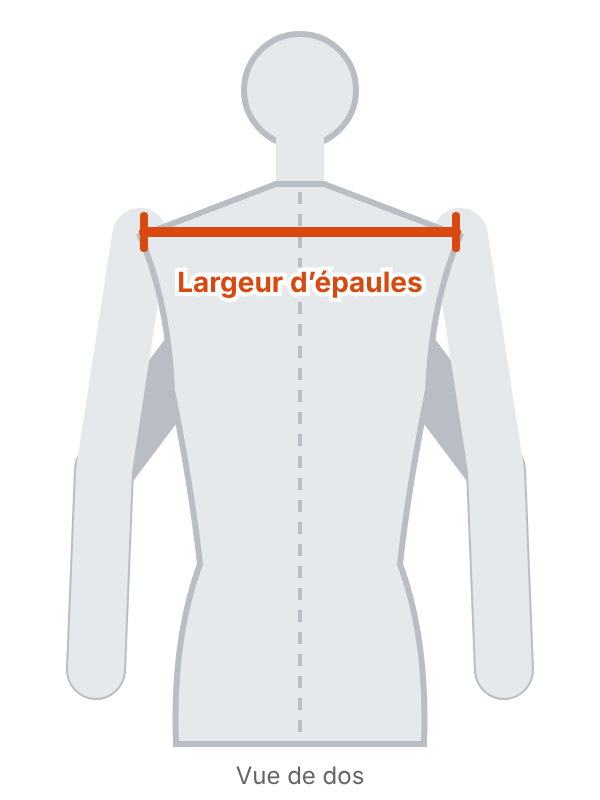
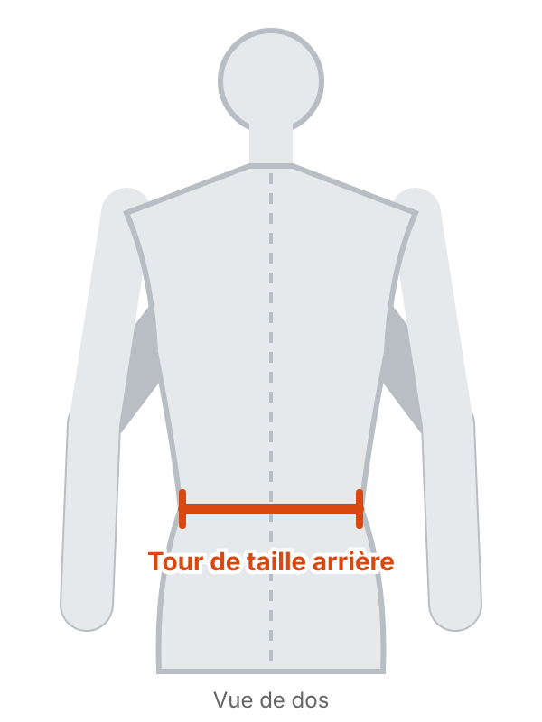
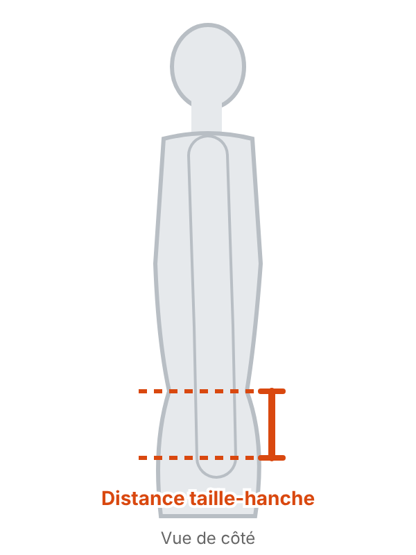
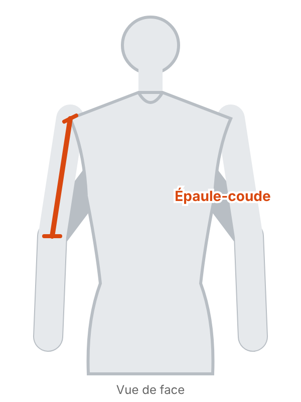
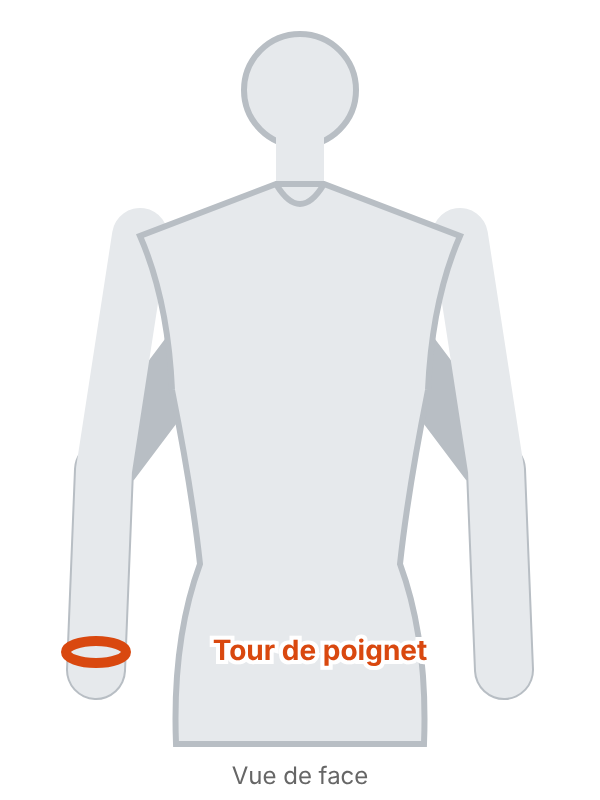